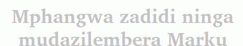

Filtering to display particular books
A filter displays data that matches certain criteria and hides what does not match.
When you translate or check particular Scripture books, you can turn on a filter.
Here is a diagram of the concept: a filtered Scripture book.
In this example,
you hide Jonah and Mark
and you display Matthew.
